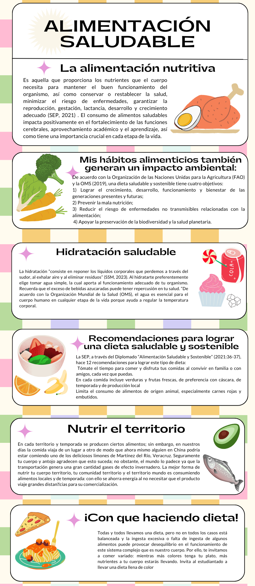

COLEGIO DE ESTUDIOS CIENTIFICOS Y TECNOLOGICOS DEL ESTADO DE MEXICO.
PLANTEL IXTLAHUACA
Elaborado por:Jennifer Medina De L a Cruz
Grupo:404. Numero de lista:20
COLEGIO DE ESTUDIOS CIENTIFICOS Y TECNOLOGICOS DEL ESTADO DE MEXICO.
PLANTEL IXTLAHUACA
Elaborado por:Jennifer Medina De L a Cruz
Grupo:404. Numero de lista:20
Fecha de Elaboracion:15 de abril del 2024.Hora:12:10 a.m.
Habitos Saluadbles

 Todos los derechos reservados,Elaboradopor:Jennifer Medina Melissa Jaqueline,Tel:7122560690,medinajenni07@gmail.com,Paginaweb:www.caratula.gob.mx se recomienda usargoogle
Todos los derechos reservados,Elaboradopor:Jennifer Medina Melissa Jaqueline,Tel:7122560690,medinajenni07@gmail.com,Paginaweb:www.caratula.gob.mx se recomienda usargoogle